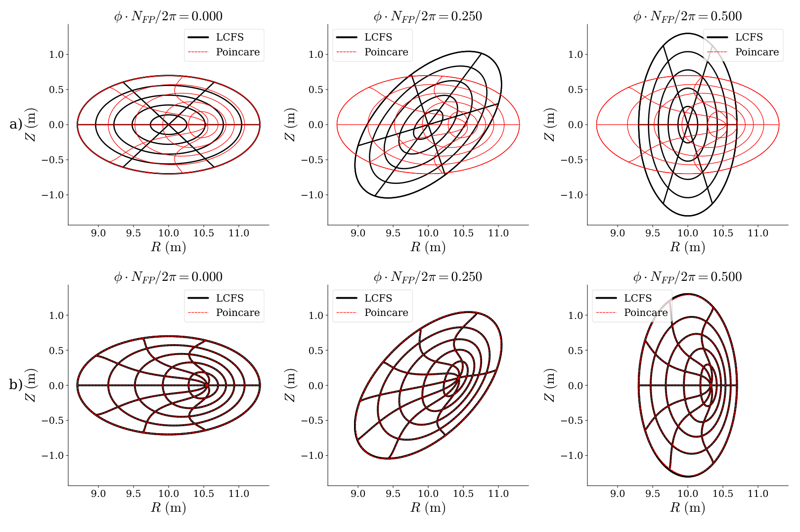
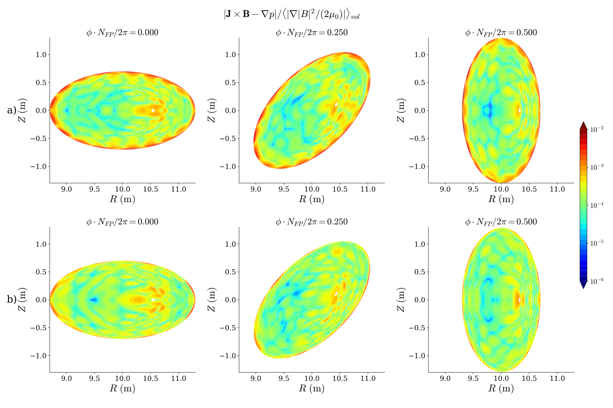
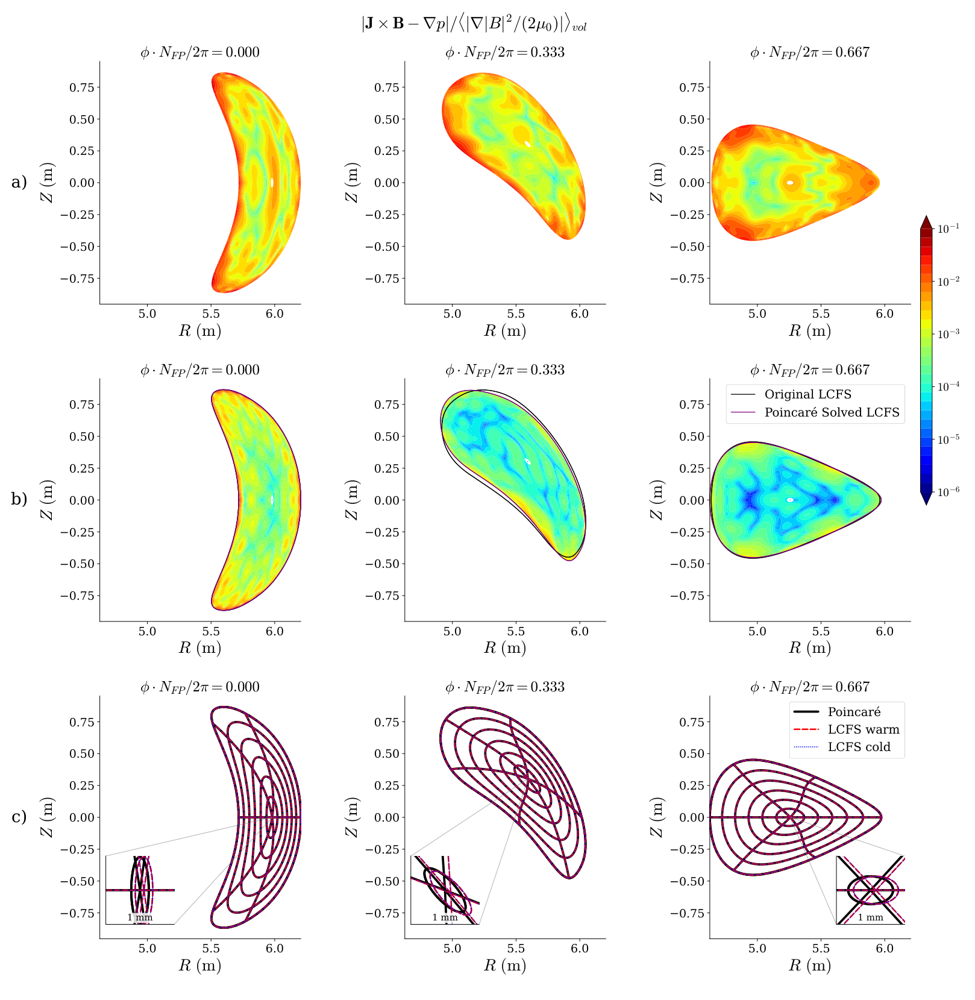
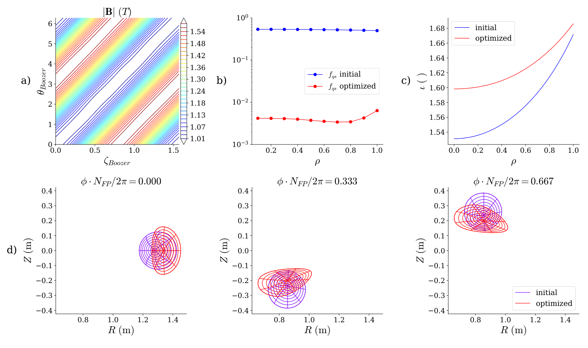
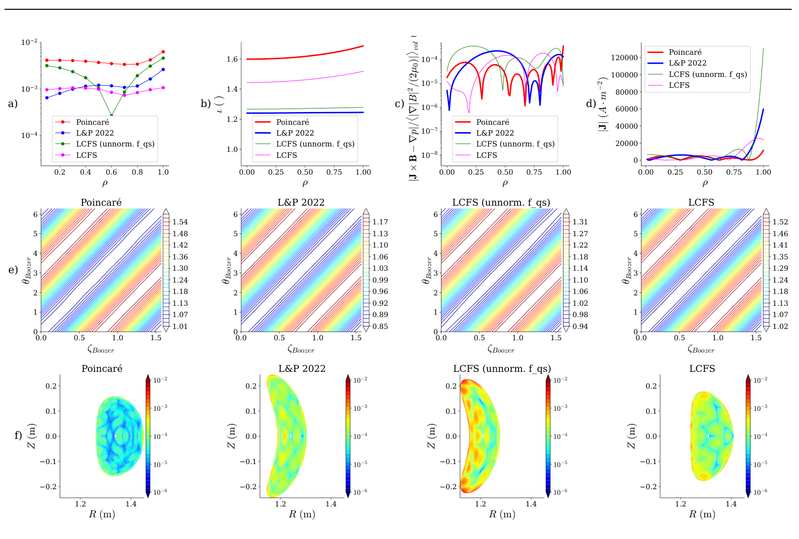
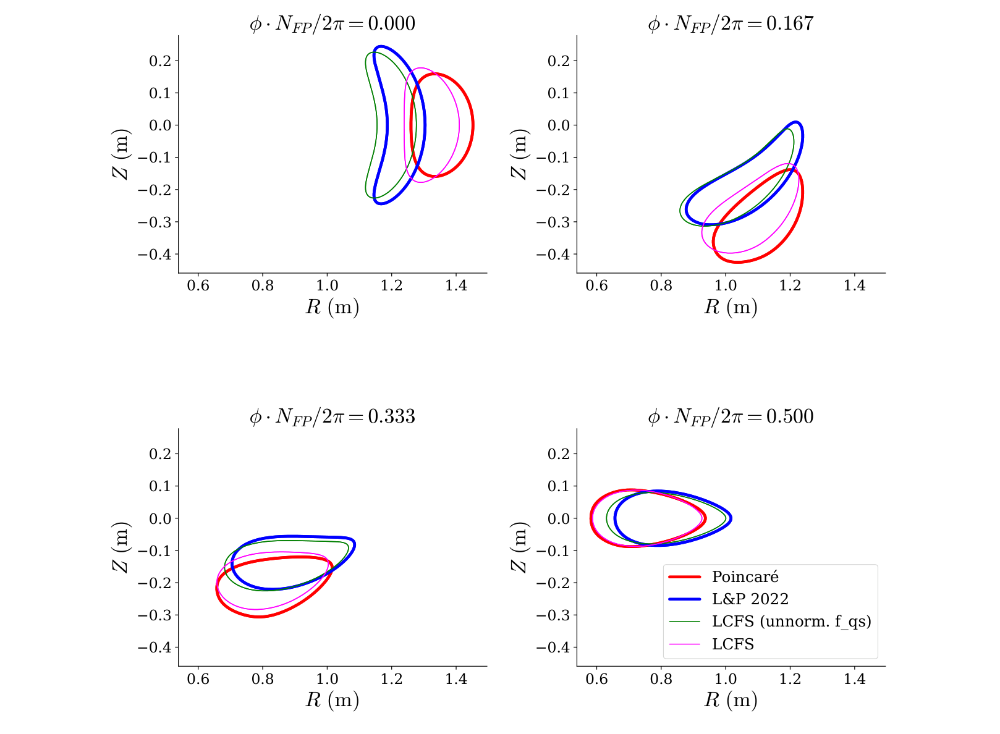

Poincaré 截面约束：降低 DESC 力残差与平衡优化
Applications of Poincaré Boundary Condition for 3D Ideal MHD Equilibrium and Optimization
重点：全截面约束的含义、不同谱方向的自由度、初猜依赖、尺度归一化，以及低残差与真实物理验证之间的边界。
阅读材料：18 页用户提供 PDF，6 幅完整原图，1 张原表，附录 A/B。代码与数据未获得；页码均指 PDF 页码。
1. 先读结论：增加环向自由度，改善数值力平衡
这篇论文改变的是 DESC 的几何约束方式：传统方法指定完整三维最外层磁面（LCFS），新方法指定某个环向平面上整组嵌套磁面的截面几何。固定的并非仅外轮廓，也并非从实验散点直接重建完整磁场。平面以外的环向形状可以变化，因而求解器能到达原固定边界求解无法到达的几何。（§2，PDF 3–5 页）
最有说服力的证据：从已有 W7-X-like 固定边界平衡出发，截面约束把原文报告的体平均归一化力误差从 降到 ，约降低 倍，同时平均边界位移为平均小半径的 1.9%，体积变化仅 0.6%。用新边界再做传统固定 LCFS 求解，冷启动和暖启动均恢复非常接近的平衡。这证明新解可由常规求解器独立到达。（§3.2，PDF 8–9 页）
应保留的边界：边界已经改变；低力残差不证明磁场无岛，不证明物理平衡唯一，不保证既有输运或稳定性指标不退化。准螺旋对称（QH）优化示范保持较低力误差，但附录表 1 中其边界准对称误差比传统 LCFS 优化更大，不能概括成“全面优于固定边界”。（§4、附录 B，PDF 12、14–17 页）
| 层级 | 实际支持的判断 | 证据边界 |
|---|---|---|
| 作者的贡献 | 把 Poincaré 截面条件接入线性约束，并把截面系数作为 stage-one 设计变量。 | 是数值算法选择，没有给出截面条件的解析适定性或唯一性定理。 |
| 论文的数值证据 | 有限个示例中，改变约束方向可以降低力残差；新边界经传统冷启动重求解仍得到同一附近解。 | 不是相同完整 LCFS 下两个求解器的纯精度比较。 |
| 读者判断 | 作为既有平衡的局部几何修正与优化参数化，很有借鉴价值。 | 先复核几何漂移、物理指标、离散误差与外部磁拓扑；尚无跨构型统计基准。 |
2. 为什么做：固定 LCFS 是方便的闭合方式，但会锁住哪些方向
仿星器平衡需满足 。VMEC/DESC 假定体积由嵌套磁面覆盖，用谱表示降低计算成本；更一般的三维磁场可能有磁岛和混沌，嵌套表示本身不能容纳所有拓扑。论文指出，固定 LCFS、总环向磁通与剖面是在有限维空间中关闭问题的一种方式。在真空极限，作者援引边界与磁通对场的唯一性；有限 可出现相同边界对应不同内部状态的分岔，因此不要把固定边界当成有限压强平衡唯一性的普遍保证。（§1，PDF 1–2 页）
传统边界系数对每个极向和环向模态约束径向系数之和。新条件则对每个径向和极向模态约束环向系数之和。前者保持全环向的外表面，后者保持一个平面内的整组磁面。二者保留的信息与放开的方向不同；约束行数较少并不意味着两个可行空间必然互为包含。因此新方法的价值不能仅用“参数更多”解释，必须看新增自由度是否能消除实际受限方向上的残差。（§2、附录 A，PDF 3–5、13–14 页；后一句为读者对线性约束结构的判断）
作者提出三个应用层次：从截面构造初猜并求解；从已有固定 LCFS 平衡出发降低残差；在物理设计优化中直接调整截面系数。第三项仍是 stage-one 平衡优化，论文没有完成线圈设计、制造约束、实验验证或稳定性优化。（§3，PDF 5–12 页）
3. 表示与基础符号：截面约束究竟指定了什么
计算坐标为 ，其中 ， 是任意极向角，本文令 为柱坐标环向角。曲面映射为 ，直场线极向角为 。 是极向流函数，提供直场线角的信息，不是额外的几何边界。（§2，PDF 3 页）
对 ，原式 (2.1) 为：
分别控制径向、极向、环向谱截断； 是磁场周期数，二者不可混淆。Zernike 基函数和径向部分（原式 (2.2)–(2.3)）为：
这里用 表示原文的 Zernike 径向多项式，避免与柱坐标 混读。允许模态满足 、，且 为偶数，。在边界 ，，因此传统 LCFS 约束（原式 (2.4)）非常简单：
固定 锁定整个三维边界；内部径向结构仍可变化。与此相对，截面系数 包含径向索引，固定它们会指定平面内各个 的几何，绝不只是固定 的外轮廓。（式 (2.6)–(2.7)，PDF 4 页）
4. 核心实现：换线性约束，保留力平衡求解器
DESC 的平衡求解被写为原式 (2.5)：
含几何和流函数谱系数，以及剖面、轴线和边界等状态； 除几何条件还含固定剖面与 规范等约束。原文通过 消去线性约束，其中 、。这里 是零空间基，不是环向分辨率 。求解只在允许的 方向上进行。（PDF 3–4 页）
将谱展开限制到 ，由 Zernike 基的线性独立性，原式 (2.6)–(2.8) 给出：
负环向索引对应正弦模态，在该平面消失；非负索引对应余弦模态，全变成同一求和。于是每个 只固定一个环向线性组合，其余组合可动。 可用相同关系单独固定，也可不固定：前者额外保留截面的直场线角信息，后者仅固定几何。heliotron 示例固定 ，§3.2 与之后优化不固定。（PDF 4–5、8 页）
任意平面 只需以 替换 ；多平面可堆叠这些关系。对 stellarator symmetry 的构型， 和 是上下对称平面，便于使用相同对称基；一般平面即使原平衡具仿星器对称性，截面表示也需正弦与余弦成分。（§2，PDF 4 页）
完整流程：给定总环向磁通、压强与电流或旋转变换剖面 → 取已有平衡的单平面磁面及可选 截面 → 构造线性关系并计算零空间 → 在约束内求解力残差 → 用每个最终状态自己的归一化量评估残差 → 检查全环向几何、体积和物理指标 → 必要时取新 LCFS 冷启动复核。仅修改线性约束意味着可复用 DESC 的大部分求解结构；论文未给出实际墙钟时间、内存、迭代次数或同预算性能表，故“低成本”是实现层面的论据，不能变成已测量的加速倍数。（§2–3，PDF 4–10 页）
5. 附录 A：数自由度时要数对，也要看方向
以下计数采用 ANSI Zernike 索引，，二者为偶数。令 数 的径向—极向对， 数 的对。原式 (A1) 为：
无仿星器对称性时，每个函数有 个系数，截面条件每函数有 行，LCFS 每几何函数有 行。原式 (A2) 写成 ，这只在 成立。由 (A1) 直接相加，一般情形应为：
这是报告对原式适用条件的核对，不声称论文另做了该推导。原文后面 时的 241 行也符合这个一般式。（附录 A，PDF 13–14 页）
有仿星器对称性时， 为偶函数，保留余弦—余弦和正弦—正弦组合； 为奇函数，保留相反配对。原式 (A3)–(A4) 的几何计数为：
边界没有对 的同类几何条件； 仍受规范等其他约束。这里的行数只计这组条件，不能直接当整个系统的全部约束秩；计算真实零空间还需考察完整矩阵的秩。（PDF 14 页；后一判断为读者说明）
| 示例 | 固定 LCFS 几何行数 | 固定截面几何行数 | 额外固定截面 | 含义 |
|---|---|---|---|---|
| QH： | 325（：163，：162） | 91（：49，：42） | 合计 133 | 共 595 个谱系数， 共 588 个；截面条件显著少行。 |
| heliotron： | 175 | 241 | 合计 355（由 计算） | 新条件反而更多行，但图 2 的力残差仍更低；释放环向方向比净参数数量更关键。 |
令几何总行数相等，原式 (A5) 给出下列交点；第一种不固定 ，第二种固定：
高于交点，截面条件行数更少；近似式需注意常数项和低分辨率。对常见 ，第一种阈值约为 。这描述数值搜索空间，不能证明存在平衡，更不能证明非凸求解的局部极小值均是低残差平衡。（PDF 4–5、14 页）
6. 评价指标：防止膨胀“作弊”，也核对原文量纲
截面以外的尺寸可变化。作者用量级关系 说明：在固定磁通 下，横截面积 增大可降低场强， 随 变化。若求解器始终使用初始状态的归一化尺度，膨胀可能让目标值看起来更小，却没有按当前磁场量级实现更好的相对力平衡。这是示意尺度论证，截面面积并不决定全部三维几何与局域场分布。（§3.1，PDF 6–7 页）
论文建议按当前迭代重新计算归一化量，也可加体积、长宽比等目标。但报告必须区分建议更新求解目标与最终结果重新归一化：作者明确说所有报告的力误差按对应平衡自身的量归一化，未在正文给出每个算例都启用了何种动态求解归一化的实施证明；增加几何目标又会引入多目标权衡。（PDF 6–7、12 页）
原文措辞核对：正文、图注和表 1 称“体平均磁压”归一化，但图 2、3 和 5(c) 实际写的是磁压梯度幅值的体平均。依图内定义，可将局域与体平均指标整理为：
分子与这个分母都是力密度，单位 ，比值无量纲；若按文字的磁压 理解，量纲会不同。本报告原样保留作者数值，称“原文报告的归一化力误差”，不替论文补写代码实现。作者所列研究分支本次不可获取，所以最终数值究竟使用哪一归一化实现仍待源代码确认。（PDF 7、9、15 页及 §6）
作者提到约 1% 或更低的残差常被当作近似平衡判据，同时脚注明确这个阈值并未形成社区统一标准，外部高保真计算或真空线圈磁场追踪才是实践中的额外验证。 是相邻迭代目标值的相对下降容差，不是物理力误差本身；收敛停机不能与已达到某个绝对精度等同。（PDF 5 页脚注、图 3，PDF 9 页）
7. 算例一：从轴对称截面起步，何时能回到相近构型
通常固定 LCFS 初猜先令 ，以边界向轴缩放构造内部磁面；截面条件的自然初猜则是绕环向旋转该平面，从 的轴对称状态开始，再逐步增加环向分辨率。该截面来自原固定 LCFS 平衡，所以这是已知截面下两种闭合方法的比较。（§3.1，PDF 5–6 页）
heliotron 的参数为 、、，固定 截面，压强与旋转变换为：
这里逐阶段提高 ，保持 。两解最终形状接近，归一化力误差由 对比到 ，约降低 倍；这个示例并不是“降低一个数量级”。（PDF 6–7 页）

来源：Elmacioglu2026_2609.36183v1.pdf，PDF 第 6 页。由原页渲染裁剪，保留全部面板；点击查看原分辨率。
怎么读：上排 (a) 为初猜，下排 (b) 为最终解；三列按图内 标注。横纵轴是 ，单位均为米。闭合曲线是固定 的磁面截线，穿过它们的曲线是固定直场线角 的轮廓，不能当成独立的磁场线追踪。（图 1，PDF 6 页）
各面板：(a) 左列外轮廓重合，但内部磁面及直场线角轮廓不同：黑色 LCFS 初猜由边界缩放产生，红色 Poincaré 初猜携带原已求解平衡的完整截面；中、右列中红色截面相同，体现轴对称 Poincaré 初猜，黑色则有原三维边界的环向形变。(b) 三列均高度接近，表明这个高周期数例子从截面出发能重获相似三维形状。
配色核对：图内图例为 LCFS 黑色、Poincaré 红色，但原图注相反；这里以图内图例与轴对称初猜形态辨认，原图不改动。最终几何重合支持“该例可得到相近构型”，不能据此断言所有低周期数或强塑形装置都如此，也不能从这些由嵌套基绘出的曲线证明无岛。

来源：Elmacioglu2026_2609.36183v1.pdf，PDF 第 7 页。由原页渲染裁剪，保留全部面板；点击查看原分辨率。
怎么读：(a) 上排固定 LCFS，(b) 下排截面条件；三列位置与图 1 相同。色条为局域归一化力误差，对数范围 到 ，暖色高、冷色低； 单位为米。图顶的分母含磁压梯度，见前述归一化核对。（图 2，PDF 7 页）
观察：(a) 更明显的高残差沿原边界分布；(b) 离开固定平面后边界附近改善，固定平面附近仍保留受限结构。结合正文的体平均数值，两解均较低残差，截面条件进一步改善。不要只凭一个截面的颜色估计全体积平均，也不要把冷色当成拓扑可靠性或稳定性证明。
与方法的关系：这展示残差与被锁定几何位置的关系；它支持改变约束方向可改善有限分辨率逼近。作者随后说明，更强塑形、低 的情况可能跑到明显不同的局部极小值，甚至在未约束平面膨胀，因此从已有解热启动更有实用性。（PDF 6–8 页）
8. 算例二：W7-X-like 的局部改良与冷启动复核
此例不固定 ，从已有 LCFS 平衡直接开始，只固定 的几何，不加限制漂移的额外目标。参数为 、平均小半径 、，，压强 ， 从轴上 0.856 单调增加到边界 0.963。正文没有列完整 系数，不能用端点擅自补成线性剖面。（§3.2，PDF 8 页）
| 求解状态 | 原文归一化力误差 | 几何与复核 |
|---|---|---|
| 原固定 LCFS | 图 3(a)；固定几何边界附近残差较高。 | |
| 固定原截面 | 平均边界位移 ，最大 ，体积变化 0.6%。 | |
| 新 LCFS，暖启动 | 初猜为新截面解；相对 Poincaré 解的轴线最大位移不超过 。 | |
| 新 LCFS，冷启动 | 初猜由新边界按标准方式缩放构造；相对 Poincaré 解的轴线同样在 内。 |
按正文半径换算，平均边界位移约 9.6 毫米、最大约 37.4 毫米，轴线复核位移约 0.096 毫米；这些是本报告根据百分比的计算，不是新测量。小平均位移仍可能影响曲率敏感的物理指标，所以“形状近”不能直接替代“原优化性能保持”。（PDF 8 页）
冷启动控制比仅做暖启动更有力：求解器只知道新完整 LCFS，并不知道新截面解的内部系数。结果说明该新几何对应的低残差平衡不是只能凭上一状态维持的数值假象。但这依然不是原 LCFS 固定不动时的改良，也不是全局唯一性证明。（PDF 8–9 页）

来源：Elmacioglu2026_2609.36183v1.pdf，PDF 第 9 页。由原页渲染裁剪，保留全部面板；点击查看原分辨率。
(a)：三列原 LCFS 解的 截面，单位米，边界有较多橙红热点。(b)：固定原截面后的解，灰黑与紫色线叠加原、新 LCFS。规定平面改善有限，中、右列更显著变冷，也能看出边界已移动。共同色条范围 至 ，与图 2 上限不同，跨图直接比颜色会误导。（图 3，PDF 9 页）
(c)：黑色 Poincaré、红色 LCFS warm、蓝色 LCFS cold 的磁面与直场线角轮廓几乎叠合；三个插图以 1 毫米宽窗口放大轴附近的 磁面。正文轴线位移与表中力误差共同支持冷暖启动一致性，单靠肉眼重合不足以给出数值精度。
角度核对：图内列标签为 ，原图注却称从零到 的三等距角度，二者不一致。这里按图内标签定位，不把三列描述为该半周期区间。所有求解标注 ，它控制目标的相对下降，不等于最终力误差。
不能推出：没有该 W7-X-like 修正前后的 QS、Mercier、输运或线圈可实现性对照，因而仅能确认原文给出的力残差与几何差异；真实磁岛、混沌和工程兼容性尚未验证。
9. 优化方法：把截面系数当设计变量，梯度仍需平衡投影
一般 stage-one 问题（原式 (3.1)）以 为边界/剖面设计参数、 为内部平衡状态：
是离散理想 MHD 非线性平衡约束；这里 用于固定剖面、磁通以及 continuation 阶段未释放的高阶设计模态，和前面平衡状态上的矩阵要按具体问题理解。先按当前设计求平衡，把状态投影到近似满足 的集合，再计算沿平衡状态变化的设计梯度。（PDF 9–10 页）
式 (3.2)–(3.4) 的一阶展开与消元可整理为：
下标表示偏导矩阵， 为伪逆。最后的括号是按论文最小范数线性响应形式得到的设计 Jacobian；必须假定前后平衡残差都足够小、一步变化可由局部线性化描述。非线性近似、条件数、伪逆零空间响应和步长会影响准确性，论文没有给出严格导数误差界。换用截面系数时，内部求解器和各个偏导需一起修改；不是只把外层变量改名。（式 (3.2)–(3.4)，PDF 10 页；导数误差边界为读者判断）
QH 真空示例把 用作变量，采用 trust-region 求解，目标（原式 (3.5)）为：
是长宽比目标残差， 是体平均场强目标残差。目标在谱 continuation 中逐步释放更高 及相应 ，加指数谱缩放，参数 ，采用 的模式尺度。论文未完整列出 continuation 日程、信赖域半径和所有求解容差，复现还需代码。（PDF 10–12 页）
双项准对称误差（原式 (3.6)）为：
这里用 重命名原文的 QS 螺旋度字母以区别谱分辨率；本例 。， 为旋转变换， 为 Boozer 电流函数（原文称 toroidal/poloidal currents）， 在本段被作者称归一化环向磁通， 为磁面平均。符号与实现约定需要一致；报告不擅自补不同通量单位的转换。指标在 的网格点上构造最小二乘目标。（PDF 10–11 页）
平均定义核对：式 (3.6) 与正文明确为磁面平均场强的三次方；附录 B 却说体平均场强归一化。本报告按明确公式解释 QS；额外的 目标明确控制体平均场强，两者不能混为同一量。归一化分母意在防止降低磁场强度来减小 QS 分子，作者称比单纯调场强目标权重更有效，但没有量化该策略的广泛统计收益。（PDF 11 页脚注、14 页）
本例目标与权重（原式 (3.7)）为：
33.3 是作者的初始整体、未加权 QS 目标值，不能与某个磁面边界值 0.499 混用。，，初、终体积均为 。作者不固定 ：该单截面的平均半径不同于传统边界的 含义；尝试固定前者会恶化优化。场强目标用于控制整体尺度，本例未额外加体积目标。初猜来自与 Landreman–Paul 类似的近圆截面、具有轴挠率的构型，再先做一次截面平衡求解，几何未明显改变。（PDF 11–12 页）

来源：Elmacioglu2026_2609.36183v1.pdf，PDF 第 11 页。由原页渲染裁剪，保留全部面板；点击查看原分辨率。
(a)：优化后边界 的 等值线，在 Boozer 极向与环向角平面呈近似平行斜纹，色条单位特斯拉。这是 QH 形态的可视化；应以 (b) 的非零误差判定近似程度，不当作精确准对称证明。
(b)：横轴 ，纵轴 QS 误差（对数）；初始蓝线约在较高水平，优化后红线显著降低。正文边界值由 0.499 降至 ，约 79 倍，称“约两个数量级”；内部改善更大，不能把所有半径都写成相同倍数。（PDF 12 页）
(c)：旋转变换 前后对比，优化后轴附近上升，剖面仍有径向变化； 并非这个目标函数直接固定的优化指标。(d)：三个环向截面的初始与优化后磁面， 单位米，图内角度标签为 的归一化环向位置。此处截面系数本身参与设计，故规定平面的几何也会随设计步骤改变；每次内部平衡求解才固定“当前设计截面”。
支持什么：真空 QH 示例可通过截面参数化提升 QS，同时所有 continuation 步骤的体平均归一化力误差保持在 至 。图中没有绘制逐步力误差轨迹，该范围来自正文。它证明一项可行示范，尚不能确认优于所有传统边界优化，也没有展示有限压强、线圈和稳定性目标共同满足的设计。（图 4，PDF 11–12 页）
10. 附录 B：低力误差的优势，并非最低 QS 误差
作者比较四个 QH 状态：主文 Poincaré；Landreman–Paul 2022 精确 QH 构型导入 DESC 后重求解；加入场强目标但未归一化 QS 的 LCFS 优化；以及使用与 Poincaré 同类目标、但调整 LCFS 系数的优化。它们并非完全正交的消融矩阵：L&P 没有场强目标，各组最初谱分辨率与超参数成熟度也不同。（附录 B，PDF 14–16 页）
原文表 1 · 四个优化状态的全局量
PDF 第 15 页，数值逐项照录； 保留原文符号，其归一化措辞存在前述差异。场强列按附录正文理解为体平均。
| 构型 | at | ||||
|---|---|---|---|---|---|
| Poincaré | 0.307 | 8.0 | 1.2595 | ||
| L&P 2022 | 0.306 | 8.0 | 0.9966 | ||
| LCFS（QS 未归一化） | 0.284 | 8.0 | 1.1117 | ||
| LCFS | 0.295 | 8.0 | 1.2563 |
相对于归一化 LCFS 优化，Poincaré 的力误差约降低 12.7 倍，但边界 QS 误差约大 5.9 倍。这两个比例是报告按表格计算。论文归因于截面优化的权重、初始 trust radius 与分辨率未充分调优；该解释合理，但缺少等预算超参数搜索来确认。不能把作者解释当作已经分离出来的因果结论。（PDF 15–16 页）
最初 Poincaré 为 ，另外三组为 。作者称再把四个最终边界统一用固定 LCFS、 和相同容差重求解后，相对力误差优势仍保留。这削弱了“仅因分辨率不同”的解释；但正文未列统一分辨率的新数值表，且重求解终态不等于同分辨率、同预算重新优化全过程。（PDF 15–16 页）

来源：Elmacioglu2026_2609.36183v1.pdf，PDF 第 15 页。由原页渲染裁剪，保留全部面板；点击查看原分辨率。
(a)：随 的 QS 误差，对数轴，红色 Poincaré 在四组中相对较高，紫色归一化 LCFS 较低。(b)： 剖面，Poincaré 约在 1.6 附近，L&P 与未归一化 LCFS 约在 1.25 附近，紫色 LCFS 居中；精确端点不从曲线读取。（PDF 15–16 页）
(c)：磁面平均力误差的径向分布，采用相同归一化定义，各构型使用自身的体平均磁压梯度尺度；局部存在起伏与谷值，各径向曲线的排序并不处处一致，不能拿某个谷值代替表 1 的全体积数值。(d)：磁面平均电流密度模，单位 ，多个 LCFS 状态在边界附近上升，Poincaré 较小。真空剖面下残余电流是求解误差的警示；有限残差条件下有电流不意味着另发现了物理边界电流机制。作者也明确不把边界电流与力误差排序当成定量单调关系。（PDF 16–17 页）
(e)：四组边界场强的 Boozer 等值图，分别有自己的特斯拉色条。它们的斜纹都近似 QH，但绝对场强明显不同，跨面板只比较颜色没有意义。(f)：四组 截面的力误差（ 为米），同类对数色条；Poincaré 整体更冷，与表 1 一致，但这里只展示一个平面，不能替代全体积评价。
图的作用与限制：把“QS 最好”与“力平衡最好”分开，也提醒读者磁场尺度、旋转变换和几何可同时改变。作者认为低力误差使物理指标更可信，但未量化残余电流导致 QS 指标偏差的大小，故不能据此修正四组 QS 排名。

来源：Elmacioglu2026_2609.36183v1.pdf，PDF 第 16 页。由原页渲染裁剪，保留全部面板；点击查看原分辨率。
读图：四面板为 ，对应半周期内等距位置；横纵轴 均为米。红 Poincaré、蓝 L&P 2022、绿未归一化 LCFS、紫归一化 LCFS。四幅均是 外边界，而非完整磁面或误差图。（图 6，PDF 16 页）
逐面板观察：零平面红/紫与蓝/绿分组较明显；第二平面红/紫的中心与形状也更接近；第三平面仍有组间位置与倾斜差异；半周期平面整体更相似，但宽度和偏移未完全相同。正文将主要边界变化归于场强目标及其满足程度，而非单独归于“换边界条件”。
支持什么：控制相似磁通与长宽比并不能保证同一三维形状或场强；归一化及尺度目标会改变最优解。Poincaré 与归一化 LCFS 的边界形状较相似，表 1 的场强也最接近。不能推出：这不是目标与超参数完全一致的单变量实验，几何叠合不保证同线圈难度、输运性能或有限压强稳定性。（附录 B，PDF 16–17 页）
11. 可信度与局限：哪些已验证，哪些仍需检验
作者明确承认的边界
截面条件是算法工具，不保证无磁岛；远离目标构型的初猜可走向很不同的局部极小值；自由的尺度需要合适归一化与额外目标；更低残差的几何修正可能破坏既有优化指标；QH 超参数尚未充分调优；残余电流对 QS 数值的影响尚不清楚。（§3.1–3.3、§4、附录 B，PDF 6–8、11–12、16–17 页）
读者提出的证据缺口
- 算法精度与模型真实性：更低有限维残差也可能来自找到更适合嵌套近似的几何；论文没有对展示的终态运行不假设嵌套磁面的独立磁拓扑验证。不能把所有残差归因于缺失磁岛，也不能由残差小排除磁岛。（PDF 2、5、12 页）
- 一般性：详细展示一个高周期 heliotron、一个 W7-X-like 细化例和一个真空 QH 优化。虽正文讨论其他初猜行为，未给多构型成功率、失败率、多起点分布或统一墙钟预算。（§3）
- 优化公平性：附录提供有价值的四组比较与统一分辨率重求解，但缺少完全匹配初猜、分辨率、权重搜索和计算预算的全过程对照；同时 QS 与力平衡的排序不同。（PDF 14–17 页）
- 残差—物理指标关联：论文说明力平衡对物理指标很重要，但没有给修正前后的 Mercier、输运、粒子约束或导数误差曲线，不能量化下游收益。（PDF 8 页）
- 成本：线性条件使现有求解器可复用，但更大零空间可能影响非线性 Jacobian 规模、迭代次数和 conditioning；没有计时基准，尚不能确认端到端等成本。（PDF 4、10 页）
原文内部不一致汇总
| 位置 | 冲突 | 本报告处理 |
|---|---|---|
| 图 1，PDF 6 | 图注配色与图内图例相反。 | 按图内图例及轴对称初猜辨认，不改原图。 |
| 图 3，PDF 9 | 图内角度标签与图注所述半周期区间不符。 | 使用图内归一化角度标签。 |
| 式 (A2)，PDF 13 | 一般 计数被写为仅 的简式。 | 明确条件，并由 (A1) 给出一般式核对。 |
| 力误差，PDF 7/9/15 | 图内磁压梯度与文字磁压的量纲不同。 | 数值照录，优先解释图内定义，保留代码待核对项。 |
| QS，PDF 11/14 | 明确公式是磁面平均，附录称体平均场强归一化。 | 按式 (3.6) 解释，并区分体平均场强目标。 |
这些核对降低歧义，但不应从排印和术语问题跳到“数值结果错误”。代码和运行数据尚未取到，无法裁决其实际实现。（读者判断）
12. 可借鉴的做法：适用前提、迁移步骤与失败条件
以下提供通用迁移建议，未假设读者正在做某个具体构型。它们是基于论文的研究方法建议，不是原文已经完成的应用验证。
已有平衡的局部修正
借鉴对象：§3.2 的“固定原截面 → 解出新边界 → 冷启动复核”链。适用任务：现有固定边界解的边界残差偏高，而允许小量形状调整。前提：必须有原解全部磁面的截面信息，且完整 LCFS 不是必须不变的工程约束。步骤：保存原解与下游指标，构造几何截面条件并先放开 ，求解后用独立密网格评估力残差、体积与全环向位移，取新 LCFS 冷启动重求解，重算 QS/稳定性/输运。成本：至少新增一个截面平衡和一个传统冷启动平衡，下游指标可能更贵。失败条件：几何漂移超容许值、坐标失效、全环向或下游指标劣化；若完整边界必须不变，则该流程不满足任务约束。
把“隐含被固定的量”显式写进优化目标
借鉴对象：尺度与场强归一化的设计。适用任务：改变参数化后出现膨胀、弱场或形状远离设备目标。前提：清楚哪些量由旧约束隐式保证，哪些量是软目标、哪些必须严格固定。步骤：分别监测体积、长宽比、磁通、体平均场强和几何有效性，给物理残差选择当前状态尺度；先做尺度扰动检查再调权重。成本：增加廉价几何/磁场目标，但使梯度与权衡更复杂。失败条件：弱场归一化分母接近零、目标互不相容、只改权重却未识别尺度退化方向。原文并未证明添加这些软目标就有严格数学适定性。
在约束方向上设计参数化，而非只追求参数多
借鉴对象：按 合并环向模态的线性关系与零空间消元。适用任务：其他谱几何求解中的截面条件或多平面条件。前提：几何评价对谱系数线性、已建立可逆有效坐标。步骤：写出平面评价矩阵，核查对称配对与规范、矩阵秩和零空间，再做独立网格残差与几何检查。成本：约束组装与秩分析较低，非线性求解成本需实测。失败条件：约束冗余或不相容、把外轮廓约束误写成全截面约束、将减少行数当作必然增益。
设计变量、平衡投影与导数一起迁移
借鉴对象：式 (3.4) 的沿平衡响应导数。适用任务：可微多物理优化中更换边界参数化。前提：内部平衡残差小且响应局部可线性化。步骤：先匹配两种参数化的一个已知平衡，验证新约束与偏导，再用重求解有限差分抽查设计导数；最后做低阶到高阶 continuation。成本：导数验证需要多次额外平衡，正式优化需要每步内部投影。失败条件：接近分岔、伪逆病态、步长过大或内部残差未控制，导致外层沿不正确响应优化。
13. 后续研究：从可复核的小实验开始
作者的后续指向：更合适的当前状态归一化、尺度目标、截面优化超参数与初猜选择；以及解释残余电流对 QS 的影响。正文并没有完整规划研究路线。下面是阅读者提出的可检验方案，尚未进行新颖性检索，不声称首次或无人做过。
优先一：建立相同预算的误差—性能 Pareto 对照
原文动机：表 1 中力误差改善与 QS 更优并未同时出现。假设：充分匹配超参数搜索后，截面参数化能在相同 QS 水平取得更低独立网格力误差。最小实验：在同一 QH 初猜上匹配 、磁通、尺度目标、归一化和停止判据；对两种变量分别使用同样数量的权重/信赖域试验，加至少三个共同初猜，固定总墙钟预算。基线：原归一化 LCFS 优化与原 Poincaré 设置。指标：密网格力误差、QS、几何有效性、体积/场强偏差、总墙钟与失败率。成功标准：跨起点出现稳定的 Pareto 改善，而非仅一项指标获益；若改进只在更宽预算或不同目标下出现，则不支持该假设。资源/风险：数十次平衡优化；非凸性与超参数噪声会使小样本排序不稳。
优先二：检验尺度归一化是否真正消除目标退化
原文动机：§3.1 描述膨胀导致固定初始归一化失真。假设：按当前状态归一化能压制弱场膨胀，同时改善独立网格残差。最小实验：选一个原文易膨胀初猜，对比固定初始尺度、动态尺度、动态尺度加体积目标三组，固定谱分辨率和预算；另用可行的未约束平面膨胀扰动检查目标响应。基线/指标：原目标，比较体积、场强、最大残差、几何 Jacobian 最小值和停机状态。成功标准：膨胀受抑且独立残差同步降低；若只有优化器目标下降而重新归一化指标不降，或几何失效，则否定。资源/风险：几组续接求解，主成本为内部平衡；动态归一化可能带来额外耦合和分母敏感性。
优先三：将低残差与真实磁拓扑验证连接
原文动机：嵌套假设与无岛之间仍有空白。假设：在可实现的线圈场或不强制嵌套的计算中，截面修正的低残差终态更接近独立参考解。最小实验：对修正前后几何，按同样线圈拟合精度构造真空磁场并追踪；有限压强例再用合适的非嵌套求解器对照。基线：原固定 LCFS 解及其线圈/高保真对照。指标：磁岛宽度、保留嵌套体积分数、边界法向场误差、外部参考几何差异与力残差。成功标准：在匹配线圈拟合误差或参考分辨率下仍有改善；若只有 DESC 残差改善而拓扑不变或更差，则否定“残差可代理拓扑”的解释。资源/风险：较高成本，线圈可实现性和外部模型假设可能混杂；不对 DESC 构造的嵌套场直接追踪并把预设拓扑当独立证据。
优先四：多平面约束与局部漂移控制
原文动机：单平面条件可让远处几何显著改变，§2 已允许任意/多平面。假设：少量平面或适度几何漂移目标可保留大部分力误差收益并降低漂移。最小实验：一个 W7-X-like 状态比较单平面、两个对称平面、以及单平面加几何漂移目标；先检查叠加约束的秩和相容性。基线/指标：原 LCFS 与单平面结果，比较全环向最大/平均位移、力误差、零空间维数及下游 QS。成功标准：在预先规定的漂移容限内获得明显残差下降且 QS 不劣化；若约束增加后收益消失或系统不相容则否定。资源/风险：若干平衡求解，增加平面会锁回需要的环向方向；外轮廓、内部磁面和角度参数化需一致。
优先五：量化残差如何影响物理指标与设计导数
原文动机：作者强调低力误差使 QS 和稳定性指标更可信，但未提供误差传递曲线。假设：在同一最终 LCFS 及一致离散设置下，收紧平衡容差能让 QS 或稳定性指标及其设计导数更快收敛。最小实验：固定一个共同边界，按多个求解容差和谱分辨率产生残差序列，独立密网格重算 QS 与一个选定稳定性指标，并对同一设计方向比较投影 Jacobian 与重求解有限差分。基线：最高可用分辨率/最严容差状态。指标：物理指标差值、梯度方向角及相对误差、边界残余电流。成功标准：至少一个指标在残差下降时稳定靠近参考，梯度验证误差随之下降；若无单调关系则不支持把低力残差作为足够的可信度代理。资源/风险：密网格和稳定性计算可能较贵；分岔、临界阈值与离散噪声可破坏连续响应，应单独记录。
14. 复现材料与关键缺口
| 材料/设置 | 已知情况 | 本次获取/验证状态 |
|---|---|---|
| 主 PDF | 用户上传 arXiv v1，18 页，2026-09-28 提交。 | 全文、附录 A/B、图 1–6、表 1 均阅读和核对。 |
| DESC 实现 | 论文 §6 指向 poincare-bc-paper 分支。 | 2026-09-30 GitHub API 返回 Branch not found（404），未取得研究实现；不据此断言其从未存在。 |
| 复现脚本/平衡数据 | 论文指向 PlasmaControl/Poincare-Paper，称含剖面和边界。 | 同日 GitHub API 返回 Not Found（404）；可能未公开、权限或路径变化，未做数值复现。 |
| 剖面与分辨率 | 两平衡例的压强、磁通、部分旋转变换、谱分辨率；QH 目标权重及谱缩放。 | 已在报告列出；W7-X-like 的完整旋转变换系数和边界/内部谱系数需原数据。 |
| 优化细节 | trust-region、谱 continuation、；图 3 的 。 | 缺完整阶段日程、初始 trust radius、求解选项与精确依赖版本。 |
| 计算资源 | 论文强调线性约束接入，未报告硬件、墙钟、内存、迭代统计。 | 不能给复现时间预算或端到端加速倍数。 |
| 独立补充材料 | 主 PDF 自含两附录；来源页未列独立补充 PDF。 | 未获得独立补充、原始运行轨迹或高保真磁拓扑验证。 |
实用复现顺序应先恢复原文件与研究提交版本，核对力误差/平均定义，再跑图 1–3 的平衡链条，最后跑 QH 与附录对照。公式、输出残差和实际目标实现要一一对应；仅使用当前 DESC 默认分支不等于复现论文研究分支。（读者建议）
15. 来源、版权与覆盖核验
主要来源：Yigit Gunsur Elmacioglu、Dario Panici、Rory Conlin、Daniel Dudt、Egemen Kolemen，Applications of Poincaré Boundary Condition for 3D Ideal MHD Equilibrium and Optimization，arXiv:2609.36183v1，2026-09-28 提交；DOI。来源页在 2026-09-30 核对，仅列 v1，未列正式期刊发表信息，本报告按预印本分析，不混用其他版本。（PDF 1 页、arXiv 来源页）
获取覆盖：主文件 Elmacioglu2026_2609.36183v1.pdf 共 18 页；全文 §1–7、附录 A/B、全部图注与表注已读。参考文献用于理解论文依赖，不宣称逐篇追读。逐页检查确认正文图 1–4、附录图 5–6 共六幅，全部多面板保留并逐项解释；表 1 已完整转录。无额外实质性未编号图、无另行编号附录表。本文所有页码均为 PDF 页码，与该文件印刷页码一致。
覆盖边界：PDF 阅读与图表解释完整；研究代码、数据、独立补充材料未获得，未进行数值运行验证。原文中的五类不一致已明确标记，归一化的实际代码仍待确认。因此“完整”仅指全部已获取论文材料的精读与报告覆盖，不扩展为代码或全部发表材料的验证。
页面核验：全部公式保存 LaTeX 源码并预渲染为离线 HTML/MathML，CSS 和字体随报告打包，正文无脚本也可读；六幅原图的裁剪、页码、面板、嵌入与解释逐项核对。已用内置浏览器查看桌面开头、公式、图解、研究方向与结尾，并以 390 像素窄屏检查公式和表格滚动；Chrome 桌面打印预览抽查显示正文、公式和图片可打印；不存在远程数学脚本或字体依赖。完整图清单为 figure-manifest.json。
版权：arXiv 来源页的许可链接为 CC BY 4.0。原图归论文作者，报告署明来源；仅对整页渲染作区域裁剪，未重绘或修改图内内容，图注解释与批判分析由本报告整理。HTML 为用户授权的 GitHub 阅读归档，上传不包含主 PDF 或个人路径。
文件 SHA-256：837ac1a8dcbe19a761c5ea137e9cd5bd3c713d0bc321dc210751e708170691d7。正文中的“读者判断”“建议”“假设”均与作者结论区分；未对后续方向做新颖性检索。